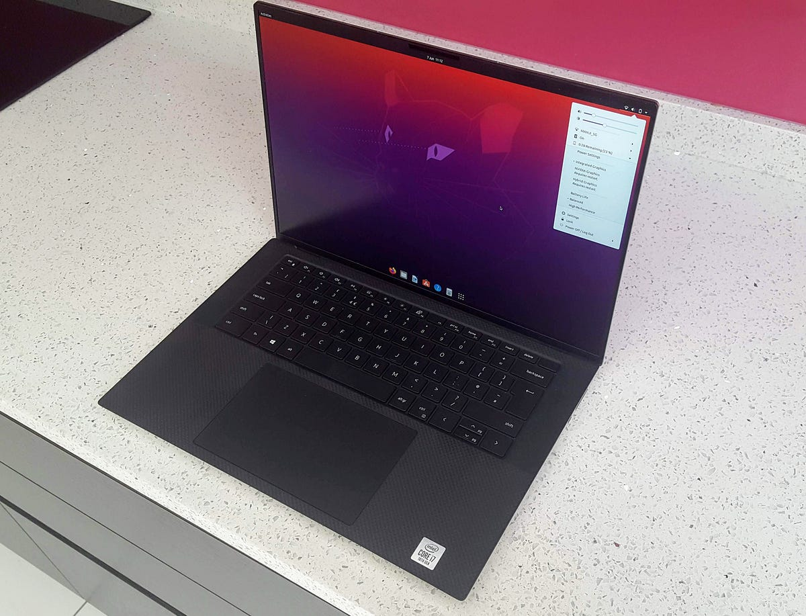
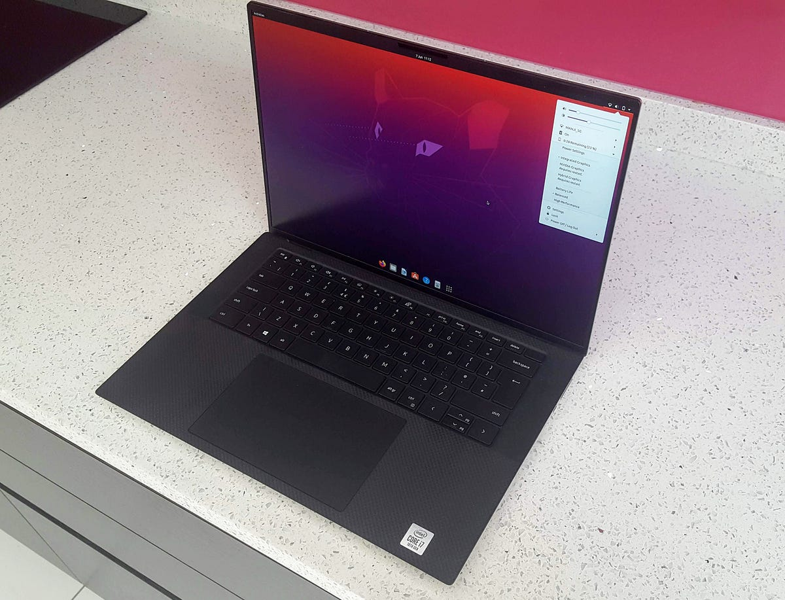
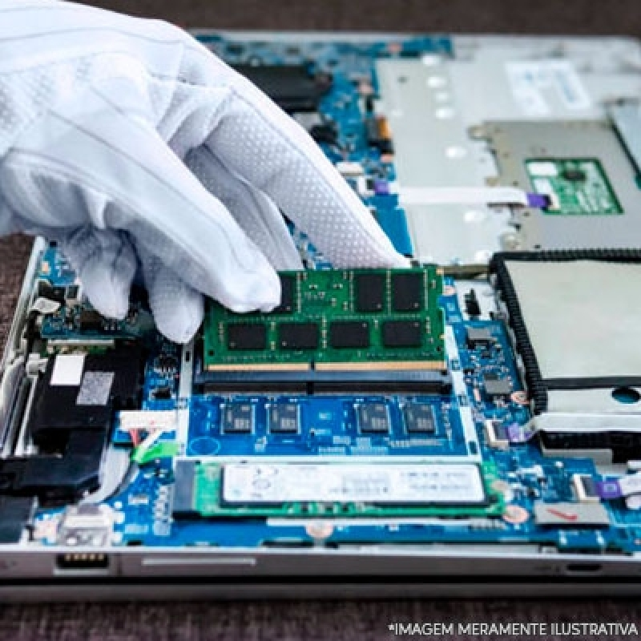
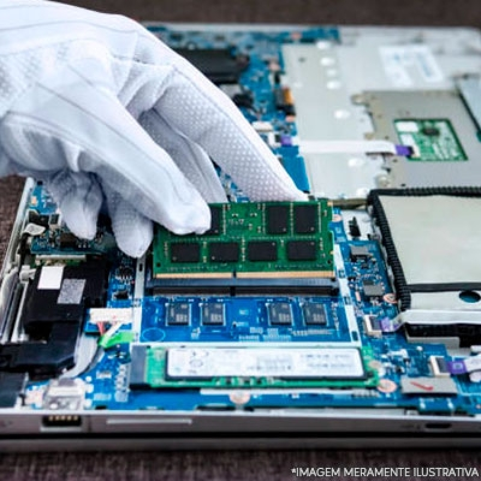

Josemir Andrade
Olá, tudo bem?
Olá, seja bem-vindo(a)
Eu sou Josemir Andrade,especialista em Segurança da Informação e Gestão de TI, com foco em soluções para o desenvolvimento de sistemas e gerenciamento de redes.
Administração de Redes
Segurança Cibernética
Governança de TI
Sistemas de Informação
Suporte ao Cliente
Redes de Computadores
Servidores e Firewall
Sistemas Operacionais: Windows e Linux
Análise e Desenvolvimento de Sistemas

 

 
